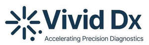

Trade Mark Journal No.2025/035 29 August 2025
UK00004248941 13 August 2025 (5,9,10,42,44)

- Class 5
- In vitro diagnostic preparations for medical diagnosis of antimicrobial resistance and pathogen detection.
- Class 9
- Optical diagnostic apparatus and instruments for medical use; spectroscopy apparatus and instruments; Raman spectroscopy apparatus; optical analysis apparatus; scientific apparatus and instruments for analysing biological samples; computer software for medical diagnostics; computer software for pathogen identification; computer software for antimicrobial susceptibility testing; computer software incorporating artificial intelligence and machine learning algorithms for medical analysis of biological samples; databases containing pathogen spectral data; downloadable computer software applications for medical diagnostics; scientific instruments for rapid pathogen detection; optical sensors for medical use; spectral analysis software; data processing equipment for medical diagnostics.
- Class 10
- Medical devices for the diagnosis of pathogen detection, phenotypic antibiotic testing and antimicrobial resistance testing; health monitoring devices; testing apparatus for diagnosis of pathogen detection, phenotypic antibiotic testing and antimicrobial resistance; pathogen detection and antimicrobial resistance diagnostic apparatus; medical diagnostic instruments for pathogen detection; medical diagnostic instruments for phenotypic susceptibility and antimicrobial resistance testing; diagnostic apparatus for medical purposes; blood testing apparatus and equipment; electronic apparatus for blood analysis; raman spectroscopy apparatus for medical use; in vitro diagnostic medical devices; medical testing apparatus; medical instruments for pathogen detection; medical instruments for antimicrobial resistance testing; medical devices for blood analysis; medical diagnostic equipment; clinical diagnostic instruments; medical devices for rapid pathogen identification; medical instruments for antibiotic susceptibility testing; point-of-care diagnostic devices.
- Class 42
- Scientific research in the field of pathogen detection; scientific research in the field of phenotypic susceptibility and antimicrobial resistance; design and development of computer software for medical diagnostics in the fields of pathogen detection, phenotypic antibiotic testing and antimicrobial resistance testing; software as a service (SaaS) featuring software for medical diagnostics in the fields of pathogen detection, phenotypic antibiotic testing and antimicrobial resistance testing; platform as a service (PaaS) featuring computer software platforms for medical analysis in the fields of pathogen detection, phenotypic antibiotic testing and antimicrobial resistance testing; data analysis services for medical diagnostics in the fields of pathogen detection, phenotypic antibiotic testing and antimicrobial resistance testing; pathogen identification services; antimicrobial susceptibility testing services; technical consultancy in the field of medical diagnostics; research and development of diagnostic technologies.
- Class 44
- Medical diagnostic services in the fields of pathogen detection, phenotypic antibiotic testing and antimicrobial resistance testing; pathogen detection services; antimicrobial resistance testing services; blood testing services; microbiological testing services; medical screening services; provision of medical diagnostic information; medical consultancy services relating to pathogen detection; medical consultancy services relating to antimicrobial resistance; clinical diagnostic services.
Vivid Dx Limited
Representative: Mishcon de Reya LLP